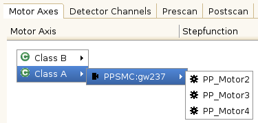
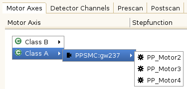
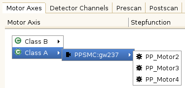
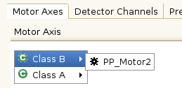
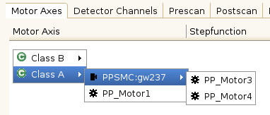
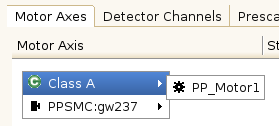
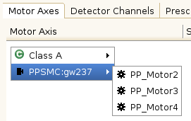

The examples below show different possibilities to set classes for devices and the
resulting context menu in the scan module view:
| Motor (PPSMC:gw237) | Axis 1 (PP_Motor1) | Axis 2 (PP_Motor2) | Axis 3 (PP_Motor3) | Axis 4 (PP_Motor4) |
|---|---|---|---|---|
| "Class A" | "Class B" | — | — | — |

| Motor (PPSMC:gw237) | Axis 1 (PP_Motor1) | Axis 2 (PP_Motor2) | Axis 3 (PP_Motor3) | Axis 4 (PP_Motor4) |
|---|---|---|---|---|
| "Class A" | "Class A" | "Class B" | — | — |
 
| Motor (PPSMC:gw237) | Axis 1 (PP_Motor1) | Axis 2 (PP_Motor2) | Axis 3 (PP_Motor3) | Axis 4 (PP_Motor4) |
|---|---|---|---|---|
| — | "Class A" | — | — | — |
 
| Motor (PPSMC:gw237) | Axis 1 (PP_Motor1) | Axis 2 (PP_Motor2) | Axis 3 (PP_Motor3) | Axis 4 (PP_Motor4) |
|---|---|---|---|---|
| — | "Class A" | "Class A" | "Class A" | — |